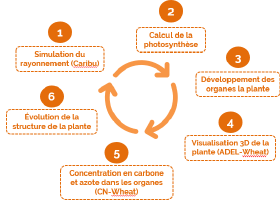
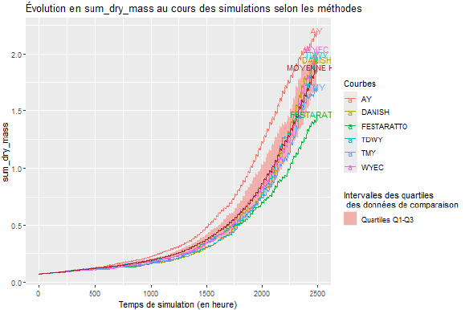

BUT3 Internship
At the end of the third year in my Data Science Degree (BUT Science des données), I did a 15-week internship. This took place at an INRAE research center (the French National Research Institute for Agriculture, Food, and the Environment) in Nouvelle-Aquitaine-Poitiers, at Lusignan (FRANCE). Since 2023, this center has hosted the operations office of the National Research Center for agrivoltaics (PNR AgriPv). This term refers to the practice of building solar panels above fields to produce clean energy by using the sunlight of the land.
In order to measure how much energy these systems can produce, simulations need a full year of meteorological data. During my previous internship at this center, my job was to explore and test statistical methods that summarize several years of meteorological data into a single representative year. In total, 6 methods had been tested.
For this internship, the goal was to learn how to use a plant growth simulation tool, CN-Wheat, to check if these methods could reproduce plant growth similar to what would normally be seen with Lusignan's historical wheater. To do this, the first step was to understand the concepts used by the simulation tool and prepare the data inputs it needed to run properly. Cleaning and preparing the data was automated in Python. Next, the model's calibration had to be checked by running test simulations, which led to fixing a few problems. Once the model was ready, the simulations were run. The last step was to study the results in R to answer the internship's main question.
Skills learned:
- Learning the concepts of a structure-function model for plant simulation
- Understanding and using a Python tool made for modeling
- Maintaining a project and debugging it
- Deepening my knowledge of Python and R
- Giving an oral presentation of results and communicating within a scientist
- Building an automated, modular Python data pipeline
- Managing and cleaning a large amount of data
- Visualization of data in R
- Understanding the needs and requests of a client
- Choosing statistical metrics that fit the context
- Writing an internship report
Illustrations

3D model of a plant used during the simulations, we can see that it consists of several shapes

Diagram showing the pipeline of the simulation tool

Evolution of the quantity of dry mass inside the simulated plants for each typical meteorological year